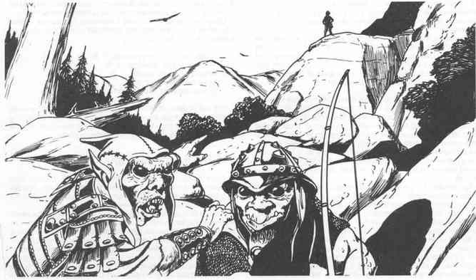

红外视觉 · Infravision

红外视觉，也称“热视觉”，是通过感知红外光谱中的辐射来看到物体形状的能力。所有非人类玩家角色都拥有红外视觉，大多数角色的户外范围为 60 码；非纯血斯托特半身人的红外范围为 30 码；卓尔、灰矮人和深地侏儒的红外范围为 120 码。
白昼中，或观察者/目标被强于月光的人造光照亮时，红外视觉无效。在这些情形下，通常的可见光会盖过热辐射，角色只能感知普通光线。
使用红外视觉的角色把热看作“光”：很冷的物体很暗，热物体很亮，两者之间的温度显示为不同灰度。所见物体的“颜色”按 1–10 分级，1 是漆黑，10 是刺眼明亮：
| “颜色” | 温度 |
|---|---|
| 1 | 低于 -50°F |
| 2 | -50 至 -11°F |
| 3 | -10 至 15°F |
| 4 | 16 至 32°F |
| 5 | 33 至 50°F |
| 6 | 51 至 70°F |
| 7 | 71 至 90°F |
| 8 | 91 至 110°F |
| 9 | 111 至 130°F |
| 10 | 高于 130°F |
判断红外视觉效果时首先要考虑空气温度，它决定使用红外视觉的角色所看到的整体明亮程度。表面温度比周围空气更高或更低的物体或生物，会在大气背景上呈现更亮或更暗的影像。以下例子可作为判断角色能否看见目标的指引。
体温约 98°F、只穿普通衣物的人类，在气温 90°F 或更低时会比周围环境明亮。半人类和多数体型 M 类人生物也一样，前提是其体温大致与人类相同。完全裹在厚重衣物中的人类，其表面温度与周围空气相同，因此红外视觉看不见他；但若身体有一小部分（例如脸或手）露出或没有充分保护，露出部分会显为小块亮点（气温很高时也可能显为暗点）。
多数情况下，红外视觉在视线受阻时看不见物体或生物；大岩石后蹲伏的人，用红外视觉和正常视觉一样不可见。不过，散发大量热或冷的物体可能通过改变周围空气温度而被间接发现。大岩石后的营火会加热周围空气，朝向观察者的岩石一面会像浅色背景上的暗轮廓。
如上表所示，如果红外视觉范围内所有东西的温度实际上都相同，极热或极冷会令红外视觉失效。在低于 -50°F 的极冷气候中，一切都会显得漆黑；在高于 130°F 的极热气候中，红外视觉除了近乎致盲的白亮外什么也看不见。使用红外视觉的角色若突然靠近大型火焰或强热源，可能患上“热盲”。例如，角色使用红外视觉时，火墙在近处突然出现，闪现的亮光会令他的红外视觉“烧坏”，在施放治盲术或类似治愈魔法前都无法使用。在较轻的情形下，角色可能只是暂时“看不见”红外线，眼睛恢复期间持续 5–10 回合（1d6+4）。
红外视觉不会发现冷血生物（爬虫、昆虫和多数其他非哺乳动物），因为它们的体温按定义与周围空气相同。然而，如果魔法突然改变周围空气的温度，冷血生物的体温不会立刻改变，因此会在短时间内从背景中显出轮廓。